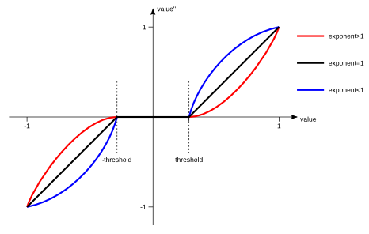

In detail, the root section name is selected from the first of the following that evaluate to a non-empty string:
The rest of this document lists and explains all tag/value pairs that exist within the following section types:
| Setting Tag | Setting Value Type | Setting Description |
|---|---|---|
| deviceDirectory | string | Defines the directory from which to load device driver plug-in modules. Defaults to the VRDevices subdirectory inside the Vrui installation's plug-in directory. |
| calibratorDirectory | string | Defines the directory from which to load device calibrator plug-in modules. Defaults to the VRCalibrators subdirectory inside the Vrui installation's plug-in directory. |
| deviceNames | list of strings | List of names of driver module sections. Each section creates a device driver plug-in module. The trackers, buttons, and valuators managed by each plug-in module are inserted into the VR device daemon's flat namespace in the order in which the plug-in module sections are listed. |
| virtualDeviceNames | list of strings | List of names of virtual device sections. Each section creates a virtual input device consisting of up to one tracker, and an arbitrary number of buttons and/or valuators. Virtual input devices are sent to device driver clients during initialization to centralize device management. Virtual input devices defined in these sections are created in addition to virtual input devices implicitly created by certain device driver modules. |
| Setting Tag | Setting Value Type | Setting Description |
|---|---|---|
| trackerPostTransformation<index> | tracker state | Defines a post-transformation that is applied to the <index>-th tracker managed by the driver module, where <index> is between 0 and one minus the number of trackers managed by the module. Post-transformations are applied "from the right," and therefore offset a tracker's reported position, and rotate a tracker's reported coordinate frame, in the local coordinate system of the tracker. |
| valuatorThreshold | number | Defines a default threshold applied to all valuators managed by the driver module. See Valuator Mapping for details. |
| valuatorThreshold<index> | number | Defines a threshold applied to the <index>-th valuator managed by the driver module, where <index> is between 0 and the number of valuators managed by the module minus 1. See Valuator Mapping for details. |
| valuatorExponent | number | Defines a default exponent applied to all valuators managed by the driver module. See Valuator Mapping for details. |
| valuatorExponent<index> | number | Defines a exponent applied to the <index>-th valuator managed by the driver module, where <index> is between 0 and the number of valuators managed by the module minus 1. See Valuator Mapping for details. |
| deviceType | enumerant |
Defines the type of the device driver plug-in module created by the section. The following device types are supported:
|
| calibratorName | string | Name of the optional calibrator section defining a calibration transformation from a device's "raw" tracking space to the environment's physical coordinate system. Calibrations can be used to shift, re-orient, and/or scale individual devices' coordinate systems, or straighten non-linear distortions such as those typically present in electromagnetic tracking technologies. |
value' = value<-threshold ? (value+threshold)/(1-threshold) : ( value>threshold ? (value-threshold)/(1-threshold) : 0 ).The second step applies the exponent:
value'' = value'>0 ? pow(value',exponent) : -pow(-value',exponent).Larger exponents make the area close to the valuator's rest value less sensitive. See Figure 1 for a graph of the mapping function.
|  |
| Figure 1: Valuator mapping as a function of threshold and exponent. |
| Setting Tag | Setting Value Type | Setting Description |
|---|---|---|
| useRemoteControl | boolean | Flag whether the A.R.T. DTrack software can be remotely controlled by sending messages to its control UDP port. If set to true, the driver module will send a "start tracking" command when the first client connects, and send a "stop tracking" command when the last client disconnects. This functionality is apparently no longer supported by DTrack software. Defaults to false. |
| serverName | string | Internet host name or dotted IP address of computer on which the A.R.T. DTrack software runs. Only needed if useRemoteControl is true. |
| serverControlPort | integer | UDP port number on which the A.R.T. DTrack software received control messages. Only needed if useRemoteControl is true. |
| serverDataPort | integer | UDP port number on which the A.R.T. DTrack software sends device reports. |
| dataFormat | enumerant | Format in which device reports are sent by the A.R.T. DTrack software. Supported values:
The default format is ASCII. |
| deviceNames | list of strings | List of names of A.R.T. DTrack device sections, each one defining a single 6-DOF tracked device with optional buttons and/or valuators. |
| Setting Tag | Setting Value Type | Setting Description |
|---|---|---|
| reportFormat | enumerant | Format in which reports for this device are sent. Supported values:
The default report format is 6d. |
| id | integer | Identification number of the device as configured in the A.R.T. DTrack software. Device IDs are only unique inside the same report format. Default IDs are assigned in increasing order per report format, starting from 1. |
| numButtons | integer | Number of buttons included in the device's reports. Defaults to 0. Ignored for report formats 6d, gl, and 3d. |
| numValuators | integer | Number of valuators included in the device's reports. Defaults to 0. Ignored for report formats 6d, 6dmt, gl, and 3d. |
| Setting Tag | Setting Value Type | Setting Description |
|---|---|---|
| devicePort | string | Name of serial port device to which the Flock of Birds is connected, such as /dev/ttyS0. |
| deviceBaudRate | integer | Serial port speed of the Flock of Birds, in bits per second. |
| masterId | integer | ID of the master bird, i.e., the bird directly connected to the host computer via serial cable. |
| firstBirdId | integer | ID of the first bird in the flock. |
| numBirds | integer | Number of birds in the flock, including an extended range controller if one is present and configured via the ercId setting. |
| ercId | integer | ID of an optional extended range controller (long-range antenna). |
| ercTransmitterIndex | integer | Index of the extended range transmitter to use on an optional extended range controller. |
| trackerRange | number | Tracker range of the Flock of Birds in inches. If no extended range controller is present and configured, can be set to either 36.0 (the default) or 72.0. If an extended range controller is present and configured, the tracker range is always 144.0 inches, and this setting is ignored. |
| trackerHemisphere | enumerant | Defines the operational hemisphere of the Flock of Birds, relative to the tracking antenna. Supported values:
|
| Setting Tag | Setting Value Type | Setting Description |
|---|---|---|
| devicePort | string | Name of serial port device to which the serial mouse is connected, such as /dev/ttyS0. |
| deviceBaudRate | integer | Serial port speed of the serial mouse, in bits per second. Defaults to 1200 bps, which is the speed used by all serial mice. |
| mouseProtocol | enumerant | Serial port protocol used by the serial mouse. Supported values:
|
| axisConverter | axis value mapper | Axis value mapper to convert from raw mouse positional deltas reported by the serial protocol to valuator values in the range [-1, 1]. This setting applies to both axes. Default value is (-34.0, 0.0, 0.0, 34.0). |
| axisConverter0, axisConverter1 | axis value mapper | Separate axis value mappers for both axes. Default values for both is the mapping defined by the axisConverter setting. |
| Setting Tag | Setting Value Type | Setting Description |
|---|---|---|
| devicePort | string | Name of serial port device to which the pinch glove controller is connected, such as /dev/ttyS0. |
| deviceBaudRate | integer | Serial port speed of the pinch glove controller, in bits per second. |
The driver defines three custom configuration file setting data types:
If a joint is omitted from a gesture, its state will not influence whether the gesture is triggered or not. For example, to assign five independent "virtual buttons" to the five fingers, one would define five gestures ((0, Bent)), ..., ((4, Bent)).
| Setting Tag | Setting Value Type | Setting Description |
|---|---|---|
| devicePort | string | Name of serial port device to which the data glove controller is connected, such as /dev/ttyS0. |
| deviceBaudRate | integer | Serial port speed of the data glove controller, in bits per second. Defaults to 9600 bps for wireless glove models and 19200 bps for wired glove models. |
| model | integer | Data glove's model number, either 5 or 16. |
| wireless | boolean | Selects the glove's wireless (-W) or wired submodel. |
| left | boolean | Overrides the handedness of the glove. Default is the handedness reported by the glove during initialization. |
| reportRawValues | boolean | Requests reporting raw finger bend values as valuators, normalized to the [-1, 1] range using each joint sensor's bend calibrator as defined in the bendCalibration<sensor index> setting. |
| reportPitchRoll | boolean | Requests reporting pitch and roll angles as valuators, normalized to the [-1, 1] range. Is ignored if the configured glove model does not have pitch/roll sensors. |
| bendCalibration0, ..., bendCalibration<numSensors-1> | bend calibrator | Converters from raw joint sensor values to ternary sensor states (straight, relaxed, bent) using a broken line model for each sensor (number of sensors depends on glove model). Default to (0, 64, 191, 255) for model 5 gloves, and (0, 1024, 3071, 4095) for model 16 gloves. |
| gestures | list of gestures | Defines a set of gestures represented as binary buttons. The state of the button corresponding to a gesture is set to true if all joint sensors defining a gesture are in the required state. |
| Setting Tag | Setting Value Type | Setting Description |
|---|---|---|
| deviceFileName | string | Selects a device by a its device file name such as /dev/input/eventX. |
| deviceVendorProductId | string | Selects a device by its USB vendor and product IDs, specified as two four-digit hexadecimal numbers separated by a colon. |
| deviceName | string | Selects a device by its USB device name. |
| Setting Tag | Setting Value Type | Setting Description |
|---|---|---|
| serialPortName | string | Device file name of the serial port to which the InterSense base station is connected, such as /dev/ttyS0. Alternatively, the InterSense base station can be connected via Ethernet, in which case the ethernetHostName tag must be specified. |
| serialPortBaudRate | integer | Serial port transmission rate configured in the InterSense base station, when using serial port connection. Defaults to 115200 [bps]. |
| ethernetHostName | string | Host name or dotted IP address of the InterSense base station when connected via Ethernet. Alternatively, the InterSense base station can be connected via serial port, in which case the serialPortName tag must be specified. |
| ethernetPort | integer | TCP port number on which the InterSense base station sends reports when connected via Ethernet. |
| resetDevice | boolean | Flag to force a software reset on the InterSense base station when loading the driver module. Should be left to false (the default) unless necessary. |
| probeConstellation | boolean | If true, downloads the InterSense base station's current constellation configuration (number and position of all ultrasound emitters) when loading the driver module. This is only a sanity check, as the constellation will not be printed or written to a file. |
| uploadConstellationConfiguration | string | Name of an Intersense IS-900 constellation section. If specified, the driver module will load a constellation configuration (number and position of all ultrasound emitters) from the subsection of the given name, and upload it to the InterSense base station when loading the driver module. This is sometimes necessary with InterSense units that suffer from selective amnesia. |
| stationNames | list of strings | List of names of Intersense IS-900 station sections, each one defining a single tracked device with optional buttons and/or valuators. |
| enableLEDs | boolean | Flag to enable the blinking LEDs indicating the InterSense's transmitter activity. Defaults to true. |
| Setting Tag | Setting Value Type | Setting Description |
|---|---|---|
| numTransmitters | integer | Number of ultrasound transmitters in this constellation. |
| transmitterIdBase | integer | ID of the first transmitter in this constellation. Defaults to 5001. |
| unitSize | number | Conversion factor from the measurement unit used to specify transmitter positions in this constellation to meters, the unit expected by the InterSense firmware. For example, if transmitter positions in the constellation section are specified in inches, unitSize must be 0.0254. Defaults to 1.0, i.e., positions are specified in meters. |
| MCF<transmitter index> | transmitter | Position and emission direction of one ultrasound transmitter. <transmitter index> is a 1-based index. |
| Setting Tag | Setting Value Type | Setting Description |
|---|---|---|
| id | integer | ID of the configured station on the InterSense base station. Defaults to the one-based index of the station in the stationNames list. |
| numButtons | integer | Number of buttons on the device corresponding to the configured station. Should be 0 for head and hand trackers, and 6 for wand devices. Defaults to 0. |
| joystick | boolean | Flag indicating whether the device corresponding to the configured station has a joystick. Should be false for head and hand trackers, and true for wand devices. Defaults to false. |
| predictionTime | integer | Motion prediction time interval for the configured station in milliseconds. Defaults to 0. |
| perceptualEnhancement | integer | Switch to select a "perceptual enhancement" mode for the configured station. See Intersense IS-900 user's manual for details. Defaults to 2. |
| rotationalSensitivity | integer | Switch to select "rotational sensitivity" for the configured station. See Intersense IS-900 user's manual for details. Defaults to 3. |
| Setting Tag | Setting Value Type | Setting Description |
|---|---|---|
| joystickDeviceFile | string | Name of the joystick device file to open, such as /dev/input/js0. |
| axisGain<axis index> | number | Gain factor (exponent) for each of the joystick's analog axes, where <axis index> is the zero-based axis index. Is a redundant implementation of the second valuator mapping step. |
| Setting Tag | Setting Value Type | Setting Description |
|---|---|---|
| mouseDeviceFile | string | Name of the mouse device file to open, such as /dev/input/mouse0. |
| Setting Tag | Setting Value Type | Setting Description |
|---|---|---|
| deviceIndex | integer | Index of Oculus Rift device to which to connect, where 0 is the first device connected to the computer. Defaults to 0 to connect to the first Oculus Rift device. |
| accelCorrection | affine transformation | Correction transformation for the Oculus Rift's three-axis linear accelerometer. |
| magCorrection | affine transformation | Correction transformation for the Oculus Rift's three-axis magnetometer. Contains what is elsewhere known as "hard iron" and "soft iron" correction. |
| neckPivot | point | Position of the neck pivot joint in HMD-relative coordinates. |
| driftCorrectionWeight | number | Weight of orientation drift correction. Larger values correct drift faster, but lead to more jitter and vertical axis tilt during head motions. The default value is 0.0001. |
| useMagnetometer | boolean | Flag to enable the use of the Oculus Rift's built-in three-axis magnetometer for yaw drift correction. Requires a magnetometer correction matrix. If enabled, the X axis of the HMD-relative coordinate system will be locked to magnetic north. |
| motionPredictionDelta | number | Amount of angular motion prediction in seconds, to account for inherent lag in the display system. |
| updateRate | integer | Rate at which tracker updates are sent to the device manager, and to connected clients. Resulting rate in Hz is 1000/updateRate. |
| deviceName | string | Name to use for the virtual input device representing the Oculus Rift's head tracker. Defaults to "OculusRift." |
| Setting Tag | Setting Value Type | Setting Description |
|---|---|---|
| devicePort | string | Name of the serial port device node to which the tracking server is connected, such as /dev/ttyS0. |
| deviceBaudRate | integer | Serial port speed of the PCTracker server in bits per second. |
| trackerRange | number | Maximum tracker range from the tracking antenna in inches. Must match the value configured in the PCTracker server. Defaults to 36.0. |
| numTrackers | integer | Number of 6-DOF trackers tracked by the PCTracker server. |
| Setting Tag | Setting Value Type | Setting Description |
|---|---|---|
| devicePort | string | Name of the serial port device node to which the tracking server is connected, such as /dev/ttyS0. |
| deviceBaudRate | integer | Serial port speed of the PCTracker server in bits per second. |
| Setting Tag | Setting Value Type | Setting Description |
|---|---|---|
| devicePort | string | Name of serial port device to which the Fastrak is connected, such as /dev/ttyS0. |
| deviceBaudRate | integer | Serial port speed of the Fastrak in bits per second. |
| numReceivers | integer | Total number of receivers (6-DOF tracked devices) connected to the Fastrak. Defaults to 4. |
| stylusEnabled | boolean | Flag whether the first receiver connected to the Fastrak is a stylus device with a single button. Defaults to true. |
| resetDevice | boolean | Flag whether to perform a software reset on the Fastrak when the driver module is loaded. Should not be enabled unless necessary. Defaults to false. |
| trackerHemisphere | enumerant | Defines the operational hemisphere of the Fastrak, relative to the tracking antenna. Supported values:
|
| stylusTipOffset | vector | If defined, offset vector from the stylus' receiver to the stylus' tip in stylus-local coordinates. If not defined, uses the stylus tip offset stored in the Fastrak's firmware. |
| enableMetalCompensation | boolean | Flag to enable fixed metal compensation in the Fastrak's firmware. Defaults to false. |
| Setting Tag | Setting Value Type | Setting Description |
|---|---|---|
| deviceIndex | integer | Index of Razer Hydra device to which to connect, where 0 selects the first device. Defaults to 0. |
| unitInches | boolean | If set to true, selects inches (25.4mm) as positional measurement unit. Defaults to false. |
| unitMMs | boolean | If set to true, selects millimeters as positional measurement unit. Defaults to false. |
| unitFactor | number | Defines an arbitrary conversion factor from native Razer Hydra measurement units (millimeters) to physical coordinate units. For example, a value of 1.0 would select millimeters as unit, a value of 1.0/25.4=0.03937008 would select inches. Defaults to 1.0. |
| applyInterleaveFilter | boolean | Applies a first-stage interleave filter to merge the time-multiplexed partial tracking streams of the two tracked handles. Defaults to true. |
| applyLowpassFilter | boolean | Applies a second-stage low-pass filter to tracking streams of the two tracked handles. Defaults to true. |
| lowpassFilterStrength | number | Sets the strength of the second-stage low-pass filter. Higher values remove more jitter, but lead to higher tracking latency. Defaults to 24.0. |
| deviceNames | list of exactly two strings | Defines the name of the two virtual input devices describing the Razer Hydra's left and right handle, respectively. Defaults to (RazerHydraLeft, RazerHydraRight). |
| Setting Tag | Setting Value Type | Setting Description |
|---|---|---|
| Setting Tag | Setting Value Type | Setting Description |
|---|---|---|
| Setting Tag | Setting Value Type | Setting Description |
|---|---|---|
| Setting Tag | Setting Value Type | Setting Description |
|---|---|---|
| Setting Tag | Setting Value Type | Setting Description |
|---|---|---|
| serverName | string | Host name or dotted IP address of the (remote) computer running the VRPN server. |
| serverPort | integer | TCP port number of the VRPN server's control socket. Defaults to 3883. |
| flipZAxis | boolean | Flag to flip the Z axis of all received positions and orientations, to work with VRPN servers that use left-handed coordinate systems (Vrui requires right-handed coordinates). Defaults to false. |
| senderNames | list of strings | List of names of VRPN sender sections, each one defining any combination of 6-DOF trackers, buttons, and/or valuators. The sender section names must match the corresponding senders defined by the VRPN server. |
| defaultPosition | tracker state | Default position/orientation to assign to senders with invalid current states. |
| Setting Tag | Setting Value Type | Setting Description |
|---|---|---|
| numTrackers | integer | Number of 6-DOF trackers reported by this sender. Defaults to 0. |
| numButtons | integer | Number of buttons reported by this sender. Defaults to 0. |
| numValuators | integer | Number of valuators reported by this sender. Defaults to 0. |
| Setting Tag | Setting Value Type | Setting Description |
|---|---|---|
| deviceName | string | Bluetooth device name (double quote-enclosed colon-separated list of six two-digit hexadecimal numbers, e.g., "00:1F:C5:21:CA:46") of the Wiimote. If no device name is given, the driver module will connect to the first Wiimote device it finds in discoverable mode. |
| ledMask | integer | Bitmask to enable/disable each of the four LEDs along the bottom edge of the Wiimote while the driver module is active, i.e., while data is streamed to at least one connected client. The mask values for the four LEDs are 1, 2, 4, 8 from left to right. Defaults to 1, i.e., only the leftmost LED lights up. |
| enableTracker | boolean | Flag to enable 6-DOF tracking using the Wiimote's built-in accelerometers and a custom-built IR tracking beacond consisting of four LEDs. Defaults to false. |
| cameraCenter | list of exactly two numbers | Position of the Wiimote's camera's focus point in pixel coordinates on its CCD, given as (<center x>, <center y>). X values are in the range [0, 1024), y values are in the range [0, 768). Defaults to (512, 384). |
| cameraFocalLength | number | Focal length of the Wiimote's camera in pixel units. Defaults to 1280.0. |
| homeTransform | tracker state | Position and orientation of the Wiimote when held in the "default" location. Forms the starting point for iterative tracking. Defaults to identity. |
| targetPoints | list of exactly four points | If enableTracker is true, this setting defines the positions of the four IR LEDs comprising the tracking beacon in an arbitrary local coordinate system, using an arbitrary unit of measurement. Positions and orientations reported from the tracking driver will use the same coordinate system and unit of measurement as the target points. For reliable tracking, the four target points, and therefore the four IR LEDs, must be non-coplanar. |
| targetTransformation | tracker state | A transformation from the target's local coordinate system, as used in the targetPoints setting, to the tracking coordinate system. A convenience to simplify setting up the same tracking beacon in different positions and orientations relative to Vrui's physical coordinate system. Defaults to identity. |
| Setting Tag | Setting Value Type | Setting Description |
|---|---|---|
| numTrackers | integer | Number of dummy trackers. |
| trackerState<index> | tracker state | Position and orientation of the <index>-th dummy tracker, where <index> is between 0 and numTrackers-1. |
| numButtons | integer | Number of dummy buttons. |
| buttonState<index> | boolean | State of the <index>-th dummy button, where <index> is between 0 and numButtons-1. |
| numValuators | integer | Number of dummy valuators. |
| valuatorState<index> | number | State of the <index>-th dummy valuator, where <index> is between 0 and numValuators-1. Valuator values must be between -1 and +1, where 0 is considered the "rest value." |
| sleepTime | integer | Time between (redundant) state updates of all trackers, buttons, and valuators managed by the driver module in microseconds. |
| Setting Tag | Setting Value Type | Setting Description |
|---|---|---|
| serverName | string | Internet host name or dotted IP address of computer running the (remote) VRDeviceDaemon instance. |
| serverPort | integer | TCP port number of the (remote) VRDeviceDaemon instance's listening socket. |
| Setting Tag | Setting Value Type | Setting Description |
|---|---|---|
| type | enumerant | Defines the type of the calibrator object that transforms raw tracker positions and orientations received from a driver plug-in module into calibrated positions and orientations in the Vrui environment's physical coordinate system. The following calibrator types are supported:
|
| calibratePositions | boolean | Flag to enable or disable calibration of tracker positions. Default value is true. |
| calibrateOrientations | boolean | Flag to enable or disable calibration of tracker orientations. Default value is true. |
| calibrateVelocities | boolean | Flag to enable or disable calibration of tracker linear and angular velocities. Default value is true. |
| Setting Tag | Setting Value Type | Setting Description |
|---|---|---|
| transformation | orthogonal transformation | Defines an orthogonal transformation (translation + rotation + scaling) that is applied to all trackers belonging to a device driver module. Calibration transformations are applied "from the left," meaning that they offset the position or orientation of trackers in physical space. A scaling component can be used to convert between different units of measurement. For example, "scale 39.37008" converts from positions in meters to positions in inches. |
| Setting Tag | Setting Value Type | Setting Description |
|---|
| Setting Tag | Setting Value Type | Setting Description |
|---|---|---|
| name | string | Name for the virtual input device. Must be unique in device manager's namespace. |
| trackType | enumerant | Type of tracking data collected for the device. The following tracking types are supported:
|
| rayDirection | vector | Direction vector of the device's pointing ray in device-local coordinates. Defaults to (0.0, 1.0, 0.0). |
| rayStart | number | Position along the device's pointing ray in physical coordinate units from which the ray is considered valid. A value of 0.0 starts the ray at the device's position; positive values move the ray start forward, negative values move it backwards. Defaults to 0.0. |
| trackerIndex | integer | For devices with trackType other than "None," index of the device's tracker in the device manager's global tracker list. |
| numButtons | integer | Number of buttons on the device. Defaults to 0. |
| buttonNames | list of strings | List of descriptive names for the device's buttons. If the list contains less than numButtons names, the rest of the names are of the form Button<index>, where <index> starts at 0 for the first button. Extra names in the list are silently ignored. Defaults to the empty list, i.e., all buttons have default Button<index> names. |
| buttonIndexBase | integer | Index of the device's first button in the device manager's global button list. Assumes that the device's numButtons buttons are consecutively numbered. |
| buttonIndices | list of exactly numButtons integers | List of indices of the device's buttons in the device manager's global button list. Required if the buttonIndexBase tag is not present. |
| numValuators | integer | Number of valuators on the device. Defaults to 0. |
| valuatorNames | list of strings | List of descriptive names for the device's valuators. If the list contains less than numValuators names, the rest of the names are of the form Valuator<index>, where <index> starts at 0 for the first valuator. Extra names in the list are silently ignored. Defaults to the empty list, i.e., all valuators have default Valuator<index> names. |
| valuatorIndexBase | integer | Index of the device's first valuator in the device manager's global valuator list. Assumes that the device's numValuators valuators are consecutively numbered. |
| valuatorIndices | list of exactly numValuators integers | List of indices of the device's valuators in the device manager's global valuator list. Required if the valuatorIndexBase tag is not present. |
| Setting Tag | Setting Value Type | Setting Description |
|---|---|---|
| serverPort | integer | TCP port number on which the VR device daemon will listen for incoming connections from device clients. To receive connections from clients on remote hosts, the local computer's firewall must allow access to this TCP port. Defaults to a kernel-assigned "random" number. |